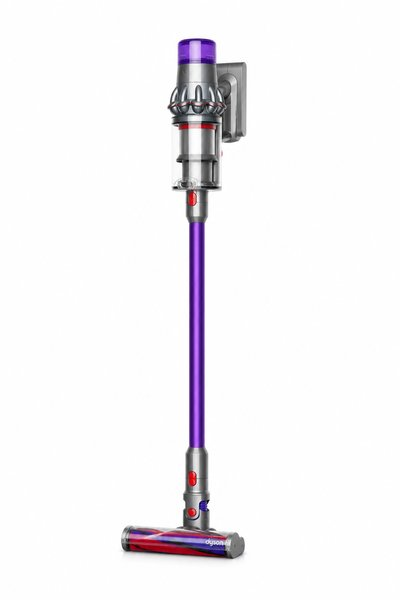

【2026年最新】楽天ブラックフライデーで絶対に買うべき目玉商品・おすすめ10選！
年に一度のビッグセール「楽天ブラックフライデー」および年末セールは、欲しかった家電や日用品を年間最安値クラスで手に入れる絶好のチャンスです。
しかし、「商品が多すぎて何を買えば本当にお得なのか分からない」「セールで失敗したくない」という方も多いはず。
そこで本記事では、20代共働き夫婦の編集部が実際に使って「暮らしの質（QOL）が劇的に上がった！」と確信している名品の中から、ブラックフライデーでポイント還元・割引率が最大化する神アイテム10選を厳選しました。
- 一目でわかる！おすすめ10選の比較表
- BEST 1：Dyson Digital Slim コードレス掃除機
- BEST 2：ルンバ (Roomba) ロボット掃除機
- BEST 3：バルミューダ ザ・トースター
- BEST 4：CIO NovaPort DUO2 65W 超小型急速充電器
- BEST 5：SwitchBot スマートロック 指紋認証パッドセット
- BEST 6：象印 スチーム式加湿器 EE-DD50
- BEST 7：LOWYA 着る毛布 グルーニー (Groony)
- BEST 8：Anker 622 Magnetic 磁気モバイルバッテリー
- BEST 9：サーモス 真空断熱 ステンレスマグカップ
- BEST 10：EXCITECH 前後17箇所 電熱ヒーターベスト
- まとめ：迷ったらコレを選べば間違いなし
| 順位 | 商品名 | カテゴリ | 最大の特徴・おすすめ理由 | 総合評価 |
|---|---|---|---|---|
| 01 | Dyson Digital Slim コードレス掃除機 | 掃除家電 | 超軽量1.9kgで抜群の吸引力！毎日の掃除が苦にならない | ★★★★★ 4.9 |
| 02 | ルンバ (Roomba) ロボット掃除機 | スマート家電 | 留守中に床掃除が完了！毎週末の掃除時間がゼロに | ★★★★★ 4.8 |
| 03 | バルミューダ ザ・トースター | キッチン家電 | スチーム技術で毎朝のパンが高級ベーカリーの味に激変 | ★★★★★ 4.9 |
| 04 | CIO NovaPort DUO2 65W 超小型充電器 | ガジェット | 卵サイズの極小2ポート！PCとスマホを同時急速充電 | ★★★★★ 4.9 |
| 05 | SwitchBot スマートロック＋指紋パッド | 防犯・スマート | 鍵を取り出す手間ゼロ！指紋1秒で玄関ドア解錠 | ★★★★☆ 4.8 |
| 06 | 象印 スチーム式加湿器 EE-DD50 | 季節家電 | ポットと同じ構造でお手入れ超簡単！フィルター掃除不要 | ★★★★★ 4.9 |
| 07 | LOWYA 着る毛布 グルーニー | 防寒・暖房節約 | 毛布にくるまったまま家事ができる！暖房代を大幅節約 | ★★★★☆ 4.7 |
| 08 | Anker 622 磁気モバイルバッテリー | スマホ周辺 | iPhoneの背面にピタッと磁力吸着！スタンド機能付き | ★★★★☆ 4.6 |
| 09 | サーモス 真空断熱マグカップ | キッチン雑貨 | 淹れたての温かさ・冷たさが数時間持続！結露ゼロ | ★★★★★ 4.8 |
| 10 | EXCITECH 電熱ヒーターベスト | 防寒ウェア | 前後17箇所ヒーターで真冬の屋外作業や通勤もポカポカ | ★★★★☆ 4.6 |

Dyson Digital Slim コードレス掃除機
従来の重いコードレス掃除機のイメージを覆す、わずか1.9kgの超軽量モデルです。圧倒的な吸引力はそのままに、片手でスイスイ家中を掃除できます。セール時のポイント大幅還元で実質価格がグッと下がる大本命です。
- 女性でも片手で軽々扱える1.9kgの軽量設計
- 微細なハウスダストまで逃さない強力なサイクロン吸引力
- 液晶ディスプレイで残り稼働時間が一目でわかる
- 強モードを多用するとバッテリー持ちが約5分と短め

ルンバ (Roomba) ロボット掃除機
外出中にボタン一つ（またはスマホのスケジュール設定）で床掃除を完璧に終わらせてくれるロボット掃除機です。共働き家庭の家事負担を物理的にゼロにしてくれる究極の時短家電です。
- 仕事や外出中に部屋中がピカピカに仕上がる
- 段差検知や家具の脚まわりもスムーズに走行
- アプリ連携で外出先からの遠隔操作・清掃履歴確認が可能
- 床にコードや小物が散乱していると引っかかる場合がある

バルミューダ ザ・トースター
給水口に5ccの水を入れて焼くだけで、外はカリッ、中はモチモチの極上トーストが焼き上がる奇跡のスチームトースターです。スーパーの安い食パンやクロワッサンが高級専門店の味へと生まれ変わります。
- 独自のスチーム技術と細やかな温度制御で誰でも感動の焼き上がり
- クロワッサンやフランスパンのリベイク性能が圧倒的
- キッチンに置いてあるだけで気分が上がる洗練されたデザイン
- 一般的なトースターと比べると価格がプレミアム

CIO NovaPort DUO2 65W 超小型急速充電器
ノートPCとスマホを2台同時に急速充電できる、卵サイズの超小型65W充電器です。カバンの中の重い充電器がこれ1つにまとまり、外出時の荷物を大幅にスリム化できます。セール時のまとめ買い筆頭アイテムです。
- 世界最小クラスの極小ボディで持ち運びに最適
- 折りたたみ式プラグでカバンの中を傷つけない
- 接続機器に応じて電力を自動最適化するNovaIntelligence搭載
- 2ポート同時65W出力時は本体表面がやや温かくなる

SwitchBot スマートロック 指紋認証パッドセット
玄関ドアの鍵をスマート化し、指紋認証・暗証番号・スマホ・カードで1秒解錠できるようにする神デバイスです。買い物袋で両手が塞がっている時や雨の日に鍵を探すストレスから完全に解放されます。
- 工事不要で既存のドアノブに両面テープで簡単取り付け可能
- 指紋をかざすだけで一瞬でガチャリと解錠
- オートロック機能付きで鍵の締め忘れの不安を解消
- 電池駆動のため年に1回程度の電池交換が必要

象印 スチーム式加湿器 EE-DD50
「加湿器の面倒なお手入れ問題」を過去のものにした大ヒット商品です。電気ポットと全く同じ構造で広口容器にお湯を沸かして蒸気を出すため、面倒なフィルター掃除が一切不要。クエン酸を入れて煮沸するだけで新品同様に綺麗になります。
- フィルター不要でカビやヌメリの心配が極めて少ない
- 沸騰させた清潔な蒸気で部屋全体を急速加湿
- ポット同様のチャイルドロックと転倒湯もれ防止機能で安心
- 沸騰させるため超音波式に比べて電気代がやや高め

LOWYA 着る毛布 グルーニー (Groony)
マシュマロのようにふんわり柔らかなマイクロファイバーに全身すっぽり包まれる大人気ルームウェアです。首元から足首まで温めながら両手が自由に使えるため、冬のエアコン暖房の設定温度を下げて電気代を節約できます。
- 極上の肌触りと圧倒的な保温力
- ガウンベルトと大きめポケット付きでスマホ収納にも便利
- 洗濯機で丸洗い可能でいつでも清潔をキープ
- ロング丈を選ぶと階段の昇り降りの際に裾を踏みやすい

Anker 622 Magnetic 磁気モバイルバッテリー
MagSafe対応iPhoneの背面にピタッと磁力でくっつくコードレス充電器です。外出先で邪魔な充電ケーブルをぶら下げる必要がなく、折りたたみスタンドで動画視聴やビデオ通話にも活躍します。
- ケーブルレスで片手持ちしながらスマートに給電
- パススルー充電対応で本体とスマホを同時にチャージ可能
- 薄型軽量でカバンやポケットにすっぽり収まる
- 有線接続に比べると充電速度はワイヤレス標準（7.5W）

サーモス 真空断熱 ステンレスマグカップ
魔法びん構造で温かいコーヒーやお茶が冷めず、氷を入れた冷たいドリンクも結露しない魔法のマグカップです。デスクワーク中に机が水滴で濡れる心配がなく、最後まで淹れたての美味しさをキープできます。
- 何時間経っても温度が逃げない抜群の保温・保冷力
- 氷を入れても結露せずコースターいらず
- 食洗機対応でお手入れが非常にラク
- 電子レンジでの加熱には非対応（ステンレス製のため）

EXCITECH 前後17箇所 電熱ヒーターベスト
市販のモバイルバッテリーを繋ぐだけで、首・背中・お腹まわりなど前後17箇所のカーボンファイバーがわずか数秒で発熱する電熱ウェアです。真冬の通勤、スポーツ観戦、屋外のDIYや作業の寒さを吹き飛ばします。
- 電源ONから約10秒で即ポカポカになる即効性
- 3段階の温度調節機能で気温に合わせて細かくコントロール可能
- バッテリーを外せば丸洗い可能で防寒着として長持ち
- 別途給電用のモバイルバッテリー（USB-A出力）が必要
まとめ：迷ったらコレを選べば間違いなし！
ブラックフライデーは、普段なかなか値下げされないプレミアム家電や、生活の負担を減らす時短グッズをまとめ買いする最大のチャンスです。
特に掃除機やトースター、加湿器などの一軍アイテムは、生活の快適度が桁違いに向上します。人気カラーや目玉商品はセール開始直後に売り切れることも多いため、早めのチェックがおすすめです！